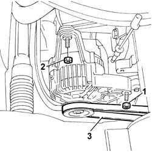
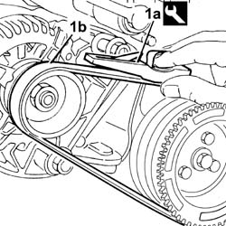

1092B60 alternator drive belt - r + r
- Path
- Procedures > 10 ENGINE > 1092 ENGINE COMPONENT MISCELLANEOUS DRIVES > 1092B WATER PUMP AND ALTERNATOR DRIVE > 1092B60 alternator drive belt - r + r
- Kind
- repair procedure (removal / refitting; the operation number is the code)
- Applies to
- all engines; all production periods
- Interactive page
- https://sloeber94.github.io/elrnDB-fDbl/en/#/2584323
Applies to: all engines; all production periods
 Removing
Removing
 Refitting
RefittingPlace the car on a ramp.
7055B54 under-engine guard - r r
1. Loosen the lower alternator retaining nut.
2. Loosen the alternator upper nut.
3. Rotate the alternator clockwise and remove the belt

Applies to: all engines; all production periods
Refitting
RemovingFit the new alternator drive belt on the pullies.
Rotate the alternator anticlockwise and secure it with the retaining bolts.
1. Using tool (1a) check the belt tension (1b) is within recommended values.
 | Name | Country |
|---|---|---|
1a | Torque wrench | 1.895.762.000 |
 | Measurement | Value | |
|---|---|---|---|
- | Alternator drive belt tension (daN) | 48 - 60 | |
New belt (-) | - | ||
| Measurement | Value | |
|---|---|---|---|
- | Alternator drive belt tension (daN) | 30 - 41 | |
Used belt (-) | - | ||

Applies to: all engines; all production periods
If the value measured is within the recommended limits, tighten the lower alternator fixing bolt (hinge) to torque.
 | Fastening | Component | Ø | Value (daNm) |
|---|---|---|---|---|
- | Bolt | ALTERNATOR ASSEMBLY | M12 | 8 |
Tighten the upper alternator fixing bolt (slotted area) to torque.
| Fastening | Component | Ø | Value (daNm) |
|---|---|---|---|---|
- | Bolt | ALTERNATOR ASSEMBLY | M10 | 5 |
If the reading is not within recommended limits, repeat the tightening operation.
7055B54 under-engine guard - r r
Remove the vehicle from the ramp.
Topics linked from this page (1)
Topics that link to this page (17)
- S10 ENGINE WHILSTLING / SERVICES BELT NOISY'
- 0510A20 timing gear with belt drive - check - carry out operation with cam cover(s) removed and tappets adjusted
- 0510A30 cam lift - check with cam cover(s) removed
- 1016C10 cylinder head - r + r and replace gasket
- 1020D14 front crank shaft oil seal cover - r + r and replace seals for versions with oil pump on crank shaft, timing side
- 1020D18 front crank shaft cover oil seal - replace
- 1028H20 piston with connecting rod - r r
- 1032B10 toothed timing belt - r + r for timing adjustment or replacement
- 1032B46 toothed drive pulley - r + r
- 1032B52 toothed driven pulley (one) - r + r
- 1032C18 mobile timing system tensioner - r + r for 24 valve engines
- 1032D27 TIMING SYSTEM FRONT PROTECTIVE COVER (LOWER PART) - R.R.
- 1036B10 overhead camshaft - r r on vehicle
- 1036C39 PHASE TRANSFORMER ON INLET CAMSHAFT IN CYLINDER HEAD - R.R.
- 1088C10 water pump - r + r
- 1092A10 Crankshaft services PULLEY - R.R.
- 3330C12 (PUMP) - MASTER CYLINDER R.R. for right hand drive versions